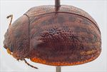
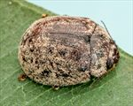
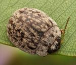
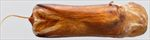
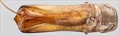
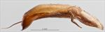
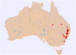

Click on images to enlarge
{kind=link}

Male, Stannum, N.E. New South Wales
{kind=link}

Female, Dalveen, S.E. Queensland
{kind=link}

Male, Reidsdale, S.E. New South Wales
{kind=link}

Aedeagus, dorsal view (Rhylstone, New South Wales)
{kind=link}
Aedeagus, lateral view (Rhylstone, New South Wales)
{kind=link}

Aedeagus, dorsal view (Warrumbungles N.P., New South Wales)
{kind=link}

Aedeagus, lateral view (Warrumbungles N.P., New South Wales)
{kind=link}

Distribution (pale-coloured circles indicate records obtained from iNaturalist)
Name
Trachymela orbicularis (Chapuis)
Reference specimen
1999-0598a, Armidale, NE New South Wales.
Adult Description
Length: ♂ 6.7–7.7 mm (n=37), ♀ (7.1)7.4–8.8(9.0) mm (n=45).
Colouration:
- Head: Mid- to reddish-brown, some black colouration often present on clypeus, usually at lateral extremes or along anterior margin, mandibles with black tips; antennomeres 1–4 straw-brown, 5–11 slightly or much darker brown, usually all concolorous, less often grading fractionally darker towards distal antennomeres, individual antennomeres usually unicolorous, rarely with proximal extreme slightly paler.
- Pronotum: Brown, concolorous with head, with two black oval maculae on each side of centre, the larger one approximately in line with the inside edge of eye, the smaller one equidistant between it and the lateral margin, only rarely are these maculae indistinct.
- Scutellum: Most commonly completely dark-brown or black, less often dark-brown or black in a broad band around edges with centre a lighter shade.
- Elytra: Brown, concolorous with pronotum, with a number of very dark brown or black quadrate patches arranged in four indistinct longitudinal rows: the first close to suture, the second starting about halfway between scutellum and humeral callus, the third from just behind and above humeral callus and the fourth along inside margin of disc, the effect of these patches is a roughly checkered brown and black appearance, punctures dark-brown, humeral callus dark-brown or black.
- Venter & Legs: Thoracic ventrites dark-brown, rarely almost black, abdominal ventrites slightly paler, legs of considerably lighter shade, inside surface of elytral epipleura brown.
- Cuticular Wax: Generally sparsely distributed, with cuticular wax more concentrated on lighter-coloured parts of elytral disc, enhancing the checkered pattern.
Morphology:
- Head: Punctures moderately sized (pd ≈ 2×ef) and quite evenly and densely distributed. Antennae moderately long (AL/BL: ♂ 40–47%, ♀ 37–40%), filiform.
- Pronotum: Almost evenly curved transversely, foveal depression absent or very weak, a small round elevation usually present in line with centre of each eye, puncturation clearly impressed, similar in size to those on head, sometimes somewhat uneven in size, evenly to somewhat unevenly distributed and moderately dense in discal area, becoming much coarser at lateral margins. Much finer punctures are scattered among the larger ones. Front margins join lateral margins in a smoothly rounded right-angle, with lateral margin curving smoothly and gradually towards rear margin.
- Scutellum: Unpunctured, rarely one or two shallow punctures are present.
- Elytra: Surface evenly curved, punctures distinct and relatively evenly distributed even towards apex, with much smaller punctures scattered on the interstices, verrucae absent or they are small and shallow, interstices often form longitudinal, slightly elevated ridges that are rendered more prominent by their lighter colouration, surface continuous under humeral callus. Vertical extension of epipleura moderate (HCE/PW = 0.31–0.34).
- Venter: Prosternal process narrow anteriorly or, less often, almost parallel-sided, lightly closed anteriorly, short setae present sparsely over prosternal process and mesoventrite, a single seta on anterior and median trochanter; front edge of metaventrite beveled, truncate; inner edge of posterior of epipleura lacking setae.
Male Genitalia (Aedeagus):
- Dimensions: Quite long (LPE/BL = 38–43%).
- Dorsal view: Shaft narrowing slightly and smoothly from base towards middle then broadening again to the widest point about 10–15% from apex before the sides converge towards apex in a smooth but quite tight arc, dorsal surface smoothly curved with short dorso-median channel, dorsolateral channels converge at rear to form a large ostial region, tip protruding slightly, ostial opening large.
- Lateral view: Shaft almost evenly but very slightly curved throughout its length, curvature increasing markedly near apex, thinning towards apex only over 5% of length, tip small and deflexed, protruding segment of flagellum is almost straight, quite thin and whip-like.
Immature Stages
Unknown.
Similar species
- Ta44: Although specimens of Ta44 are on average slightly larger than typical specimens of Ta70, and the aedeagus is quite different, they can be very difficult to distinguish.
- Ta30: A smaller species, whose aedeagus is almost identical in shape to that of Ta70. The geographic distributions of these two species overlap over a large range, and they frequently occur in mixed populations at the same location. Both utilize the same host.
- Ta24: This species shares roughly the same distribution and Angophora host as Ta70, they are of similar size and are often found together. It has a pronotum without dark maculae, and its elytra are uniform in colour, lacking the small dark maculae that are present in Ta70.
Notes
- Taxonomy: Identification as Trachymela orbicularis (Chapuis) is by comparison with a paratype in the Natural History Museum, London (BMNH), and is somewhat tentative.
- Distribution & Abundance: A single male specimen from Windorah in south-western Queensland (collected under bark) is identical to typical specimens, including in the structure and dimensions of the aedeagus. This record is about 300 km west of the closest known occurrence of Angophora (Atlas of Living Australia, Virtual Herbarium), but it is possible that the species may feed on one or more species of Corymbia.
- Host Associations: Ta70 has been recorded only from Angophora sp.
- Morphological Variation: The LPE/BL ratio is clustered into two clearly separated groups. 13 of the 17 specimens examined fall into the range of 0.416–0.428. The other four specimens range from 0.388–0.402. This might seem to point to specific distinction between these groups of specimens. The shape of the aedeagus of two of these four specimens is almost identical to that of the first group. Two of these specimens are from the Coonabarabran area in N.S.W, another is from south of Tenterfield and the fourth is from the Bunya Mountains in southern Queensland. The first two of these specimens do show a very small difference in aedeagus shape from typical specimens, with a much more pronounced downward curve of the aedeagus towards the apex. It is possible that two separate species are included in Ta70, but there seem to be no other characters that would separate them.
Copyright © 2026. All rights reserved.